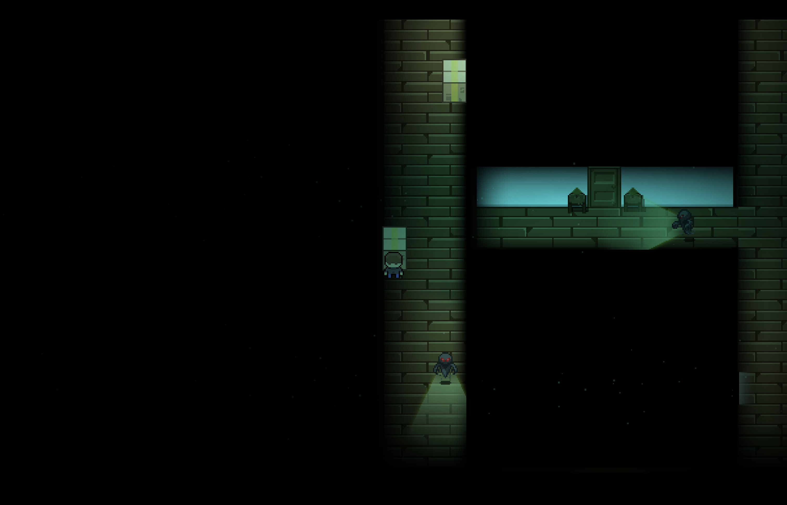

Projects
You're Grounded! (WIP)
A stealth escape game where you sneak out of a fortified house while avoiding AI enemies and solving puzzles.
You're Grounded! – Devlog
Grab Mechanic + Camera Zoom
Finished enemy grab logic with zoom and spacebar mash escape. Also added visual stun effect after escape. Big tension boost!
Hamper Interactions
The laundry hamper now bounces and plays a rustle sound when hit — enemies nearby will hear it and investigate.